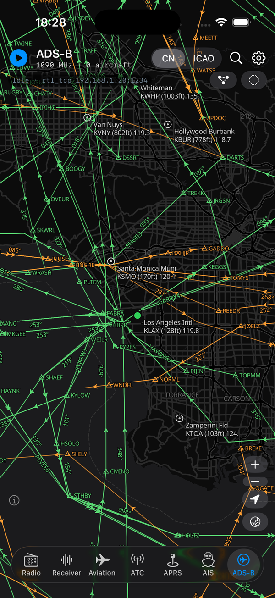

Airspace data file
The airport frequencies on the ATC page, and the airways, navaids and procedures on the ADS-B page, come from one JSON file that you import. The app carries no country's chart data of its own. This page describes that file and gives a Los Angeles example to download and try.

Try the example first
- Download the exampleatc-lax.json (about 600 kB): the 20 towered airports within 90 km of Los Angeles International, 152 frequencies, 51 navaids, 84 airways and 698 departure and arrival procedures. It is made from the NASR data the United States Federal Aviation Administration publishes, effective 2026-10-29.
- Get the file onto the iPhoneAirDrop, iCloud Drive or the Files app: anything that lets the iPhone see it.
- Import it in the appOpen the ATC page. On first use it shows a button for choosing a file (选择文件); tap it and pick the JSON. Or, in Files, touch and hold the file, choose Share, then SDRViewer.
- Look at the ADS-B pageMove the map or the scope to Los Angeles and you have the pictures above. The layers button at the top right switches airways, waypoints, navaids, airports and each kind of procedure.
Not for navigation. This is background for a receiver's display. It goes out of date and may be wrong. For any flying, use the current official publications.
Why you import it yourself
Aeronautical information is published by each country's aviation authority under its own terms: some, the United States among them, publish it for anyone to use; others can be read for free and may not be redistributed. So the app ships no data and defines a file format instead, for data you are entitled to use.
The file as a whole
The file is one JSON object: a few lines about itself, then five lists. Any list may be empty, []: a file with only airport frequencies is useful.
{
"format": "sdrviewer-atc",
"version": 1,
"region": "us-klax",
"updated": "2026-10-29",
"source": "FAA NASR 28-day subscription, effective 2026-10-29 …",
"airports": [ … ],
"navaids": [ … ],
"routes": [ … ],
"procedures": [ … ],
"sectors": [ … ]
}| Field | Meaning |
|---|---|
format | Always "sdrviewer-atc": how the app knows what the file is. |
version | The format's version, 1 at present. |
region | A short name of your own for this data. |
updated | The data's date. Aeronautical information changes every 28 days, and the date says how old yours is. |
source | Where the data came from; the app shows it. |
Every coordinate is in decimal degrees, WGS-84: north and east positive, south and west negative. Los Angeles is at longitude -118.408. Frequencies are in MHz.
airports: airports and their frequencies
One entry per airport, with its frequencies in channels. The ATC page lists what can be listened to from these; the ADS-B page draws the airport's circle and name.
{
"icao": "KLAX",
"iata": "LAX",
"name": "Los Angeles Intl",
"nameEnglish": "Los Angeles Intl",
"position": {"lat": 33.9425, "lon": -118.40805, "elevationMetres": 39.0},
"channels": [
{"role": "atis", "label": "ATIS · Arr", "mhz": 133.8, "callsignEnglish": "Los Angeles ATIS", "hours": "H24"},
{"role": "delivery", "label": "Clearance", "mhz": 120.35, "callsignEnglish": "Los Angeles Clearance", "hours": "H24"},
{"role": "ground", "label": "Ground · South Cmplx", "mhz": 121.75, "callsignEnglish": "Los Angeles Ground", "hours": "H24"},
{"role": "tower", "label": "Tower · North Cmplx", "mhz": 133.9, "callsignEnglish": "Los Angeles Tower", "hours": "H24"}
]
}| Field | Required | Meaning |
|---|---|---|
icao | yes | The four-letter code, which is the airport's identity: procedures and sectors refer to it. |
iata | The three-letter code, for display only. | |
name / nameEnglish | yes | The name in the local language and in English. With only one, write it twice. |
position | yes | Latitude, longitude and elevation in metres of the airport reference point. |
channels[].role | yes | What the frequency is for; see the table below. |
channels[].mhz | yes | The frequency. |
channels[].label | The short name on the button: a sector, or "north runways". | |
channels[].callsign / callsignEnglish | The radio callsign, such as "Los Angeles Tower". | |
channels[].backup | A standby frequency. | |
channels[].hours | Hours of operation; H24 is always. | |
channels[].note | Anything else worth saying. |
Values for role:
| role | Meaning |
|---|---|
atis | The recorded airport information broadcast. It never stops, which makes it the best test signal. |
delivery | Clearance delivery |
ground | Ground control |
apron | Apron or ramp control |
tower | Tower |
approach | Approach and departure |
emergency | The emergency frequency, 121.5 |
ops | Airline or airport operations |
A role the app does not know does not reject the file; that entry is filed under "other".
navaids: radio navigation aids
Ground stations: VORs and NDBs. The ADS-B page draws them with chart symbols and, zoomed in, a compass rose round each VOR.
{"ident": "LAX", "type": "VOR/DME", "name": "Los Angeles", "lat": 33.93315, "lon": -118.43201, "frequency": "113.6 MHz"}| Field | Required | Meaning |
|---|---|---|
ident | yes | The station's identifier, two or three letters. |
type | yes | VOR/DME or NDB, which decides the symbol. |
lat / lon | yes | Position. |
frequency | The frequency as text with its unit: "113.6 MHz", "362 kHz". | |
name / nameChinese | Name. |
routes: airways
An airway is a list of points in order. The ADS-B page joins each to the next and writes the designator along the line.
{
"designator": "V23",
"section": "NASR AWY",
"points": [
{"name": "OCN", "lat": 33.24063, "lon": -117.41772, "compulsory": false},
{"name": "KELPS", "lat": 33.3242, "lon": -117.51505, "compulsory": false},
{"name": "DANAH", "lat": 33.48101, "lon": -117.69837, "compulsory": false},
{"name": "SLI", "lat": 33.7833, "lon": -118.05476, "compulsory": false}
]
}| Field | Required | Meaning |
|---|---|---|
designator | yes | The airway's name: V23, J5, A593. |
points[].name | yes | The waypoint's or navaid's name. |
points[].lat / lon | yes | Its position. Every point carries its own coordinates; there is no separate table of waypoints. |
points[].compulsory | Whether it is a compulsory reporting point, which decides a filled or an open symbol. | |
section | Where in the source it came from; a note only. |
A long airway need not be given whole: the example keeps the part of each that comes within 280 km of Los Angeles.
procedures: departures, arrivals and approaches
A procedure is a list of legs from one point to the next. The ADS-B page draws each kind in its own colour, with arrows along the line for the direction flown.
{
"kind": "sid",
"name": "ORCKA5",
"airport": "KLAX",
"runways": ["24L"],
"byATC": false,
"legs": [
{"type": "DER", "fix": "", "lat": 33.94682, "lon": -118.43467},
{"type": "TF", "fix": "DLREY", "lat": 33.94368, "lon": -118.46515},
{"type": "TF", "fix": "KLIPR", "lat": 33.92951, "lon": -118.43878},
{"type": "TF", "fix": "KEGGS", "lat": 34.00845, "lon": -118.29959},
{"type": "TF", "fix": "COOPP", "lat": 34.12113, "lon": -118.10053},
{"type": "TF", "fix": "ORCKA", "lat": 34.34973, "lon": -117.69314}
]
}| Field | Required | Meaning |
|---|---|---|
kind | yes | sid departure, star arrival, approach, missed missed approach, hold. |
name | yes | The procedure's name, such as ORCKA5. |
airport | yes | The airport's four-letter code, as written in airports. |
runways | yes | The runways it applies to; may be an empty list. With a runway direction chosen in the app, only that runway's procedures are drawn. |
transition | The name of a transition. One procedure is often a common part and several transitions to different directions, each written as an entry. | |
byATC | Whether it is flown only as assigned by a controller. | |
legs | yes | The legs. At least two with coordinates, or there is nothing to draw. |
The fields of a leg:
| Field | Meaning |
|---|---|
type | The kind of leg; see below. If unsure, IF for the first point and TF for the rest. |
fix | The name of the waypoint the leg ends at, or an empty string. |
lat / lon | Where it ends. |
altitude | An altitude limit as text: "1200" at, "≥1500" at or above, "≤1800" at or below, "≤1800/≥1200" between. Shown beside the waypoint when zoomed in. |
speed | A speed limit, such as "MAX250". |
course | Course in degrees. |
turn | Turn direction, "L" or "R". |
flyOver | Whether the point must be overflown. |
| type | Meaning |
|---|---|
IF | Initial fix |
TF | Straight from the previous point to this one. The usual leg. |
DF | Direct to this point from wherever the aircraft is |
CF | On a given course to this point |
DER | The departure end of the runway, where a departure starts |
VA / CA | A heading or course held to an altitude, with no fixed end |
HM | A holding pattern, with course and turn |
The Los Angeles example is made from the FAA's NASR data, which says which points a procedure passes and nothing about altitude or speed, and holds no approaches. So its procedures are lines and names only; altitude, speed and the rest are there for data of your own that has them.
sectors: controllers' sectors
A sector is a piece of airspace with a floor and a ceiling, worked by one controller position on its own frequency. The ATC page uses sectors to answer "who has the airspace where I am, and which frequency is that"; the ADS-B page draws their boundaries.
The Los Angeles example has none (sectors is empty): this FAA data holds no sector shapes. Here is an invented approach sector, to show the format:
{
"id": "ZZZZAP01",
"name": "AP01",
"kind": "approach",
"callsignEnglish": "Example Approach",
"mhz": 119.3,
"backup": 124.5,
"hours": "H24",
"serves": ["ZZZZ"],
"volumes": [
{
"ring": [[30.98925, -140.0], [30.9492, -141.1122], [29.99507, -141.14225], [29.04163, -141.09102], [29.01075, -140.0]],
"lower": {"metres": 0, "surface": true},
"upper": {"metres": 6000, "datum": "STD"}
}
]
}| Field | Required | Meaning |
|---|---|---|
id | yes | The sector's unique identifier. |
name | yes | Its name. |
kind | yes | area en-route control, approach, or terminal. The layers menu switches them by kind. |
mhz | yes | The main frequency. |
callsign / callsignEnglish | The radio callsign. | |
backup, hours | Standby frequency, hours of operation. | |
serves | The codes of the airports the sector serves. | |
volumes | yes | One or more pieces of airspace, each a boundary ring with a floor and a ceiling. |
volumes[].ring | yes | The boundary's corners in order, each [latitude, longitude]; the first need not be repeated at the end. |
volumes[].lower / upper | yes | Floor and ceiling in metres. "surface": true is from the ground; "datum": "STD" is on the standard pressure setting (a flight level). |
Making your own
| What you want | How |
|---|---|
| A few airports' frequencies | Download the example above, edit its airports and leave the other lists empty. Typing it by hand is enough. |
| A whole country or region | From that country's aeronautical information publication (AIP). Read its terms first: much of it can be read for free and may not be redistributed, in which case the file you make is for your own use. |
If importing goes wrong
| What you see | Why, and what to do |
|---|---|
| The file cannot be read | It is not valid JSON, usually a comma too many or too few, or an unmatched quote. Any JSON validator will find it. |
| Imported, but nothing is drawn on ADS-B | The view is not over the area the data covers (move the map there), or the Chart switch at the top of the layers menu is off. |
| Procedures are drawn in plainly the wrong place | Latitude and longitude swapped, or a west longitude or south latitude without its minus sign. |
| "Loading chart…" for a few seconds when the map opens | Normal. The larger the file the longer it takes; a whole country takes several seconds. |
| The ATC page says the position is outside published airspace (已发布空域之外) | No sector in the file covers where you are. A file with airport frequencies and no sectors does this; the frequencies are still in the airport list. |